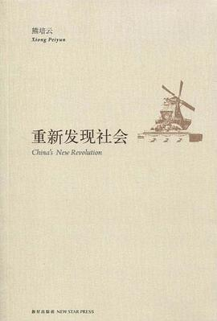

《重新发现社会》

总体观点
中国近代百年的主要叙事是“国家的解放”，但在全能主义国家膨胀的同时，作为自治肌理与人伦底座的“社会”却被严重压制与消解。当下的首要课题是“重新发现社会”。
一个健康的现代文明必须拥有强健的民间力量、独立的公共领域与明晰的产权保护。唯有让社会回归社会、让民间组织与邻里互助茁壮生长，才能承托起平稳转型的历史重任。
警惕激进断裂式的暴力革命，主张立足互联网公民围观、权利觉醒与宪政限政的“增量历史”。通过社会自身的缓慢自愈与文明重构，走出中国现代化的历史三峡。
核心观点
-
1. 从“国家的解放”走向“社会的解放”，重构自治肌理
全能国家无法包办人生的所有幸福，必须将自主权、公益权与经济活力还给民间社会。
汶川大地震中民间志愿者与民间公益组织的自发迅速驰援，展现出超越官僚体系迟缓反应的巨大草根自治能量。 -
2. 民间是个好东西，社会资本是抵御原子化冷漠的防波堤
邻里协会、读书会、公益基金会等民间共同体，能够有效修复个体在现代化大潮中被撕裂的无助感。
社区业主委员会通过依法选举与理性议事，成功抵御物业滥收费并维护公共设施，成为公民践行民主议事的实战课堂。 -
3. 物权是自由的屏障，“风能进雨能进，国王不能进”
私有财产神圣不可侵犯不仅关乎经济利益，更是保护普通人不被公权力随意践踏尊严的物理防线。
“最牛钉子户”吴苹夫妇手持物权法与规划图纸坚守孤岛老宅，迫使开发商依法协商补偿，敲响了物权意识觉醒的警钟。 -
4. 纳税人权利意识是现代民主宪政的发源之锚
政府的一厘一毫都来自纳税人的血汗，纳税人有权过问预算去向、要求账目公开并问责乱花公款。
公民依法申请公开政府部门“三公消费”（公车、公款出国、公款吃喝）详细账目，推动公共财政从暗箱走向阳光透明。 -
5. 互联网公共领域的“围观改变中国”，赋权普通大众
网络论坛与社交媒体打破了信息垄断，草根网民的守望相助与广泛围观形成了监督权力的强大道义法庭。
“华南虎照门”事件中，无数懂摄影、生物与法学的网民在网络论坛上通力协作抽丝剥茧，最终彻底揭穿地方官员造假谎言。
全书结构
-
第一章 国家与社会
辨析国家与社会的权力边界，反思全能主义国家逻辑，提出中国走向现代文明必须以社会解放为基石。
对比国富与民富的内在逻辑，论证藏富于民与扶持民间自治团体才是国家长治久安、渡过“历史三峡”的真正压舱石。 -
第二章 经济与社会
探讨市场经济与民间共同体的共生关系，批判唯GDP资本化弊端，呼吁积累抵御风险的社会资本。
分析传统乡村互助网络在资本侵蚀下的瓦解，提倡以现代合作社与非营利公益组织重构温暖有韧性的熟人社会。 -
第三章 物权与税权
阐明私有产权与纳税人知情权作为自由宪政柱石的深远意义，界定公共财政取之于民用之于民的契约本质。
从拆迁博弈切入剖析物权法出台的时代分水岭，强调没有财产权的独立，人身自由与言论自由就只能是空中楼阁。 -
第四章 从自由到民主
探索从底线权利保护走向制度化民主治理的演进路径，主张以宪政限政规范权力、防范激进陷阱。
讲述乡村基层选举中的利益博弈与偷鸡寓言，指出民主习惯需要在真实的微小自治实践中缓慢生根而非靠口号速成。 -
第五章 开放的传统
重新评估传统文化资源，打捞墨子平民互助、胡适自由考据精神，主张在开放现代性中汲取历史增量。
辨析五四打倒孔家店的过激之处，提出以“增量历史”温和眼光看待文化传统，在现代法治框架下激活传统仁爱诚信。 -
第六章 网络社会
聚焦中国互联网早期公共领域的蓬勃生长，剖析网络围观、公民新闻与社交论坛对社会赋权的历史功绩。
复盘“华南虎照门”与“周久耕名烟门”网络舆论监督全过程，展现键盘背后的无数普通人如何汇聚成改变现实的理性力量。 -
第七章 补遗
总结二十世纪激进流血革命的反思教训，提出二十一世纪“流汗建设”的减政主义与公民社会韧性哲学。
借法国1968年“五月风暴”的得失，告诫转型期社会必须坚守底线法治与理性协商，避免极端狂热把社会推入深渊。